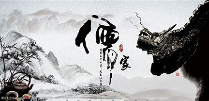
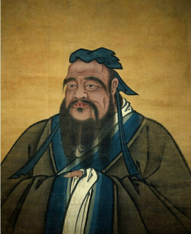
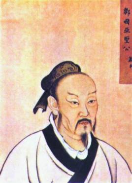

点击图片
-
《孔子》 孔子（公元前551年9月28日～公元前479年4月11日），子姓，孔氏，名丘，字仲尼，鲁国陬邑（今山东省曲阜市）人，祖籍宋国栗邑（今河南省夏邑县），中国古代思想家、政治家、教育家，儒家学派创始人、“大成至圣先师”。 孔子开创私人讲学之风，倡导仁义礼智信。有弟子三千，其中贤人七十二。曾带领部分弟子周游列国十四年，晚年修订六经（《诗》《书》《礼》《乐》《易》《春秋》）。去世后，其弟子及再传弟子把孔子及其弟子的言行语录和思想记录下来，整理编成《论语》。该书被奉为儒家经典。 [2] 孔子是当时社会上最博学者之一，在世时就被尊奉为“天纵之圣”“天之木铎”，更被后世统治者尊为孔圣人、至圣、至圣先师、大成至圣文宣王先师、万世师表。其思想对中国和世界都有深远的影响，其人被列为“世界十大文化名人”之首。随着孔子影响力的扩大，祭祀孔子的“祭孔大典”一度成为和中国祖先神祭祀同等级别的大祀。
 - 学历值:
95 - 门徒值:
100 - 影响力:
100 - 战斗力:
80
-
孟子 孟子名轲，字子舆（约公元前372年—公元前289年） [1] ，邹国（今山东邹城东南）人。战国时期哲学家、思想家、政治家、教育家，是孔子之后、荀子之前的儒家学派的代表人物，与孔子并称“孔孟”。 孟子宣扬“仁政”，最早提出“民贵君轻”思想，被韩愈列为先秦儒家继承孔子“道统”的人物，元朝追封为“亚圣”. 孟子的言论著作收录于《孟子》一书。其中《鱼我所欲也》、《得道多助，失道寡助》、《寡人之于国也》、《生于忧患，死于安乐》和《富贵不能淫》等篇编入中学语文教科书中。
 - 学历值:
80 - 门徒值:
30 - 影响力:
70 - 战斗力:
30